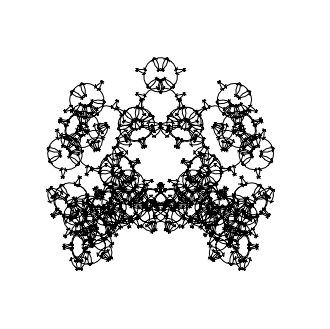

Posted by Tom De Smedt on Mar 21, 2008
Hi Zach, been a while!
Thanks for sharing the script, still produces very nice results.
Hi Zach, been a while!
Thanks for sharing the script, still produces very nice results.

Monsters
Posted by Zacharias Enochsson on Mar 21, 2008
For Tom De Smedt: approximately a year ago (thats eons ago in internet-time) you stumbled across my then website, which I at the time had pretty much abandoned (looks like I might start keeping it up again -we'll see).
And what it does is this: It basically draws a sierpinsky triangle using a L-system. But you can chage the left-turn angle and right-turn angle as well as vary the recursion depth, which produces a whole bunch of interesting and surprisingly organic shapes.Anyway, you left a comment on a post of some nodebox code asking to use it in the gallery. I'm sorry I never even noticed (again, I was faltering in keeping my site up at the time). I just wanted to let you know this way that you are more than welcome to use it anyway you like. For the interest of others, here's the code
I'm no good at prettying up these things, so its just plain-ol b&w line drawings. If you wanna pretty it up, go right ahead, and please let me know too.